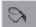
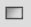
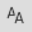

The Distributed PAC Project node bears the user-assigned name of the solution. This folder contains the elements System, Canvases, etc., which are described later on. It is the lowest main node point within the Solution.
A right-click on the project node opens a context menu with the following items:
|
Command |
Description |
|---|---|
| Project Library References |
Opens the Project Library References dialog where you can define the libraries referenced in your project. |
| Add External Reference |
Offers the possibility to reference external .net-files used by the HMI, to make them available in the project. In that way, ready-made program parts (e.g. for weather information, to determine the location, etc.) which have been self-made, or are freely available in the internet can be used in the project easily. Specify the path where you have stored the .dll file. With the next compile, it will be integrated in the HMI.
|
| Remove External Reference |
Used to remove references to external .net-files that were inserted to be used in the HMI.
|
| Check Integrity |
Checks the integrity of the project and provides information of any inconsistencies. If inconsistencies are found, a dialog opens to ask whether they have to be resolved. (See Check Integrity) |
| Import |
For the import of archive files so as *.System.zip; *.Basic.zip; etc. Dialog Import opens after you have selected the element to be imported. |
| Documentation |
|
| Options |
for further information see Project Options |
| Configurations |
Opens the History Trend Manager (For more information, refer to the topic in the HMI -User Guide. History Trend Manager |
| General HMI Properties |
|
| Named Style |
The Named Style command enables the user to customize the visualization of certain editors of the HMI for the current project. For example, it is possible to define the color(s) of an alarm warning or a frequently used label. Each editor is assigned a name and a corresponding definition, making it easy to adapt and reuse. To open the Named Style tab, follow these steps:
Result: The Named Style tab opens. When the Named Style command is selected, two additional commands appear above the Open command.
The following editors are displayed in the Named Style tab:
 Colors:Follow these steps to add a color or a blink color in the Named Style tab:
Result: The following are displayed:
To rename or remove a color or a blink color:
To change the color, click the arrow in the Tag column. To update the description, click on the current description in the Description column and edit it.
 Brushes:Follow these steps to add a brush in the Named Style tab:
Result: The following are displayed:
To rename or remove a brush:
To update the description of a brush, click on the current description in the Description column to edit it. Follow these steps to change the color of the brush in the Tag column.
NOTE: you can either choose a basic color from the Color drop down list within the Brush Editor, or tick the check box Use Color Blend in the Gradient Editor to combine multiple colors.
Pens: Follow these steps to add a pen in the Named Style tab:
Result: The following are displayed:
To rename or remove the name of a pen:
To update the description of a pen, click on the current description in the Description column to edit it.
Follow these steps to change the properties of a pen:
 FontsFollow these steps to add the font of your choice in the Named Style tab:
Result: The following are displayed:
To rename or remove a font:
To update the description of a font, click on the current description in the Description column to edit it. The following actions can be performed in the Font dialog box.
|
| Theme |
This item concerns the possibility of using different themes in a project. Each theme contains the predefined colors, brushes, etc. and those which have been created in Named Styles in the project or those being imported. The theme serves to overrule the adjustments of these elements, while the original definition is preserved. With the creation of individual themes the presentation of the elements used in the HMI can be set individually and you can change to another look fast and easy.
Default Themes → EcoStruxure Automation Expert - Buildtime offers two default themes:
Concerning item Open : The view Theme:... opens and shows the colors, brushes, pens and fonts defined in the project. As long as the entries are not modified they are read only, that means they are selectable but the entry cannot be modified, although it is possible to click in column Tag in a field and in that way you can read the entire text even if it is too long to be shown in the column completely. In order to adjust the values the entry has to be made editable by a right-click → Overwrite Brush (Overwrite Pen, Overwrite Font). In tab Colors there are two kinds of colors possible: colors and blink colors. Therefore, the right-click context menu contains two commands here - Overwrite As Color, Overwrite As Blink Color. In that way, it is possible to switch a color into a blink color and vice versa. The red arrow icon turns into an appropriate icon ( = color, brush, pen, font; = blink color) and the name is displayed bold to highlight the modified entries. After the entry has been made editable, as described above, and the field in column Tag is selected a ...-button appears on the right edge of the field. A click on this button opens the editor to adjust the color, font, etc. An already modified entry can be reset to initial value by a right-click → Reset Color (Reset Brush, etc.). |
| Multilanguage dictionaries |
This node comprises three commands for multilanguage text presentation:
|
| Image Storage |
Use this command to open the Image Storage dialog, which you can use to manage the images which are used in the project. Images stored with this function are saved in the current project path in \HMI\ImageStorage\*\*.jpg. They can be used e.g. for canvases. A description of the editor can be found at Image Storage. |
| Adapters... |
Opens dialog Adapter Compatibility. This dialog is to admit adapter connections even if the adapters have different namespaces. |
| Commit... |
This entry will appear only if you are working on a project that is already under SVN version control. If you start the commit, although there are still unsaved changes in the project, the Information dialog opens, informing you of this fact. You are asked if you want to save changes before commit so that unsaved changes are not lost by accident. You can select:
|
| Revert |
This entry will appear only if you are working on a project that is already under SVN version control. Using this item a SVN dialog will open, which shows a list of the files that have been changed. Select those files with undesired modifications to revert them. At the next commit these files will not appear in the list.
NOTE: To clean the solution from unnecessary files, select Build HMI area from the Home menu , and select the Clean button. When you use the Revert feature, select the Delete unversioned objects button to open the SVN dialog.
|
| Subversion |
This entry is only available, if you are working on a project that is already under SVN version control. It opens a sub-context menu containing various functions of SVN, such as Show Log, Merge, etc. For more information about these features please look up the Tortoise SVN help, which can also be opened from this sub-context menu. |
| Add Solution to Subversion |
Adds the opened project to administration by SVN. Only the relevant files for the administration are automatically selected (binary files, objects and documentation files are not included in the administration because they are only generated locally on the computer when required). In any case, it is advisable to clean the project immediately before carrying out this action (in the Home menu Build area select Clean) in order to clean the project from unnecessary files. |
| Help |
Dynamically generates Solution Help. |